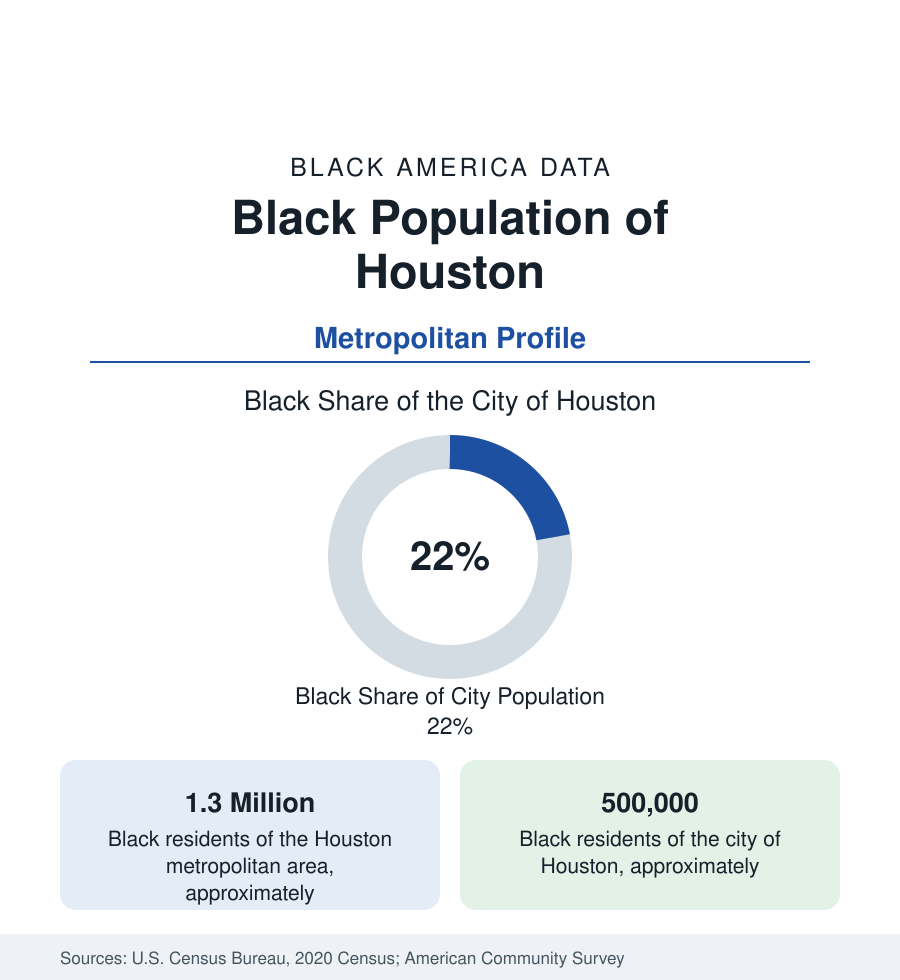

Black Cities
Black Houston: Population, Wards, and Growth
The Houston metro holds about 1.3 million Black residents, and the city about half a million — roughly one in five Houstonians. The census profile of Black Houston.

Houston holds the largest Black population of any city in Texas and one of the largest in the South: the metropolitan area counts about 1.3 million Black residents, and the city of Houston itself about half a million — roughly one in five Houstonians. Black Houston is at once an old population, rooted in wards settled by freed families after emancipation, and a rapidly growing one, fed by the same return migration that is reshaping Black geography nationally and by one of the largest African immigrant communities in the United States. This article profiles the population in the census data.
The Wards and the Historic Geography
Houston's Black geography was organized by its ward system. The Third Ward, southeast of downtown, became the center of Black professional and institutional life — home to Texas Southern University, one of the nation's largest historically Black universities, and to Emancipation Park, purchased by formerly enslaved families in the nineteenth century and among the oldest public parks in Texas. The Fifth Ward, northeast of downtown, grew as a working-class community of railroad and industry workers. Acres Homes, in the northwest, was settled as a semi-rural Black community of garden plots and small farms, later annexed into the sprawling city. Sunnyside, in the south, consistently ranks among the most completely Black large neighborhoods in the state. These names remain the reference points of Black Houston's map, even as the population has long since spread across the entire metropolitan fabric.
Growth on Every Side
Unlike the northern profiles in this section, Houston's Black population is growing in both the city and the region. The metro's Black growth comes from three sources the migration data distinguish: natural increase in a comparatively young population; domestic in-migration, including a notable and lasting movement from Louisiana that accelerated after Hurricane Katrina displaced New Orleanians in 2005, many of whom remained; and international immigration. The suburban pattern is pronounced in Fort Bend County, southwest of the city — among the most diverse counties in the United States — where Missouri City and the surrounding communities hold a large, affluent Black suburban population, and in the northern suburbs of Harris County.
An African Immigrant Center
Houston is one of the principal gateways of African immigration to the United States. Its Nigerian community is regularly counted among the largest in the nation — by some estimates the largest of any American city — concentrated in the southwest corridor of Alief and Sharpstown, and Ghanaian, Ethiopian, and Cameroonian communities add to a foreign-born Black population that forms a significant share of the metro total. The survey data show the familiar profile of recent African immigration nationally: high educational attainment, high labor-force participation, and household incomes above the Black metro average, detailed in this reference's article on the foreign-born Black population.
Composition
Employment follows the city's engines: the Texas Medical Center, the largest medical complex in the world, the energy industry, and the Port of Houston together employ Black Houstonians across the full range from clinical and technical professions to logistics and trades, giving the metro's Black occupational profile an unusually heavy weight in health care and energy.
Black Houston's indicators sit near or above national Black averages on most measures in the survey data: educational attainment lifted by the immigrant and professional populations, household incomes near the national Black median, and a large Black business community documented in the business section's metro comparisons. The distribution is wide — the historic wards record incomes and health indicators well below the metro's Black averages, and flood exposure, in a city repeatedly struck by major storms, falls unevenly on the low-lying historic neighborhoods. The averages describe a growing, comparatively prosperous Black metropolis with pockets of the same disinvestment found in every profile in this section.
Reading the Houston Numbers
Houston's profile closes the first group of city studies in this section — New York, Atlanta, Washington, and Chicago before it — and the comparison among them is the lesson. Houston resembles Atlanta in growth and Southern pull, Chicago in its ward-era historic geography, and neither in its immigrant scale, which is distinctively its own. Its figures should be read as a growth case: a Black population expanding in city and suburbs alike, within the state — Texas — that now holds the largest Black population in the nation.
More in Black Cities
Black Atlanta: Population, Distribution, and Growth of a Black Metropolis
Metro Atlanta holds more than two million Black residents — roughly one in three, second only to New York. The suburban distribution, migration history, and composition of Black Atlanta in the census data.
Black New York: The Largest Black Population in America
The New York metropolitan area holds about 3.4 million Black residents — more than any metro in the nation — and the city itself about two million. The census profile.
Black Washington: The District and the Metro
The Washington metro holds about 1.6 million Black residents, and the District itself — long a majority-Black city — now records a Black share near 41 percent. The census profile.
Source: U.S. Census Bureau, 2020 Census; American Community Survey; Population Estimates Program.